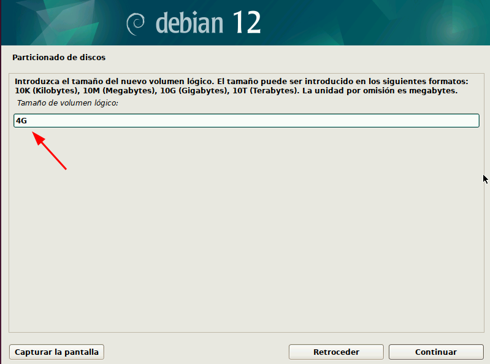
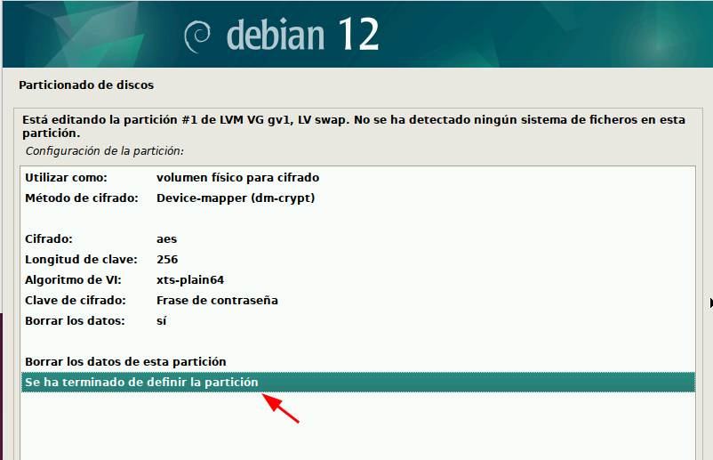
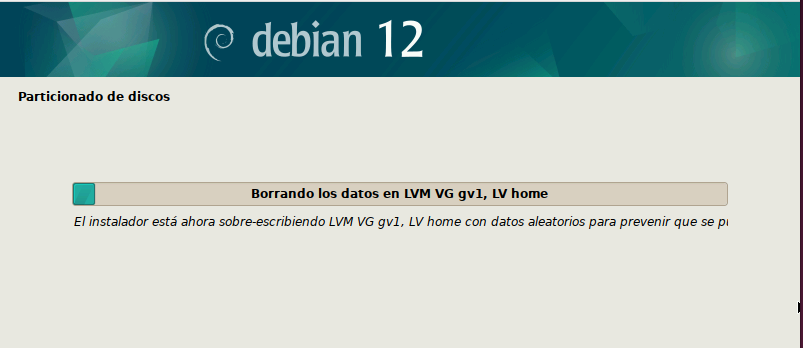

En esta Actividad, se va a realizar el Bastionado de una instalación del sistema Debian, así como del arranque del mismo. Vamos a usar un sistema Debian 12. A fin de no hacer el documento demasiado extenso y pesado de leer, vamos a omitir todos los pasos de la configuración de la instalación que no tienen mucho o nada que ver con la seguridad del sistema, y vamos a centrarnos principalmente en la parte del particionado, en la que procederemos a crear un LVM cifrado para varias de las particiones. También indicar que la instalación se va a hacer sin conexión a internet, para evitar que se pueda sufrir un ataque durante este proceso en el que el equipo es muy vulnerable.
Establecimiento de contraseñas de usuario.
Comenzaremos nuestra instalación de forma normal, sin internet como hemos comentado, y cuando lleguemos a la parte en que se nos solicita los nombres de usuario root, de usuario y contraseñas, debemos configurar unas contraseñas que sean realmente seguras y robustas, que sean difíciles de averiguar por "fuerza bruta".
Particionado de Discos
Esta es la parte de la instalación mas importante a la hora de hacer un bastionado de la misma, ya que procederemos a crear un grupo LVM cifrado, para la mayoría de las particiones.
Lo primero que haremos, cuando lleguemos a esta parte del particionado, es elegir la opción "Manual".
Se nos mostrarán los discos que tenemos disponibles, en nuestro caso, uno. Seleccionamos el disco, y aceptaremos comenzar con el particionado del mismo.
Seleccionamos el espacio libre y creamos una partición nueva.
La crearemos con un tamaño de 1Gb, y la configuramos como "partición primaria" ya que esta partición será la que destinemos a "/boot", es decir, será la que contendrá los archivos de arranque del sistema.
La crearemos al principio del espacio disponible.
Una vez creada la partición, procedemos a configurarla de la siguiente manera:
- Sistema de ficheros ext4 transaccional.
- Punto de montaje: /boot.
- marca de arranque: activada.
Ahora, procedemos a crear el grupo de volúmenes lógicos (LVM), para ello, seleccionamos el espacio libre tras crear la partición /boot, y accedemos a "Configurar el gestor de volúmenes lógicos (LVM)".

Seleccionamos "si" a guardar el esquema de particionado actual.
y crearemos el grupo de volúmenes seleccionando la opción para ello.
le ponemos un nombre.
seleccionamos el espacio libre.
y guardaremos de nuevo el esquema actual del particionado.
Con esto, ya tendríamos creado nuestro grupo de volúmenes, por lo que ahora, crearemos volúmenes en el grupo, solo los vamos a crear, los configuraremos algunos pasos mas adelante. Para ello, seleccionaremos "Crear un volumen lógico", seleccionamos el grupo en el que queremos crearlo y le asignamos un nombre, en nuestro caso, como este primer volumen lo vamos a destinar al sistema de archivos raíz, lo llamaremos root.

Este primer volumen lógico, lo crearemos con un tamaño de 10Gb, ya que será destinado a "/" y con ese tamaño será suficiente para los archivos del sistema.
Creamos del mismo modo que antes, otro volumen lógico, que destinaremos a la memoria de intercambio, por lo que lo llamaremos "swap" y le asignamos un tamaño de 4Gb, que es el tamaño recomendado teniendo en cuenta que debe ser el doble de la memoria RAM sin sobrepasar los 8Gb.

Tras crear el volumen "swap", creamos el volumen al que llamaremos "home", que será el que destinemos a los archivos de los usuarios. A este volumen le asignaremos el espacio restante.
Una vez terminada esta creación de volúmenes, podremos ver un resumen de las modificaciones.
Lo siguiente que haremos, será cifrar estos volúmenes que hemos creado. Para hacer esto, seleccionaremos "Configurar los volúmenes cifrados" y en "Crear volúmenes cifrados".
Seleccionamos los volúmenes a cifrar, en nuestro caso, seleccionaremos los tres que hemos creado.
Seleccionaremos por cada volumen las opciones del cifrado, podemos cambiarlas, pero nosotros las vamos a dejar por defecto, pues nos viene bien así.

Una vez seleccionada la configuración del cifrado, se nos solicitará por cada volumen, si queremos sobrescribir con datos aleatorios para evitar que si había datos anteriores al cifrado, estos se puedan copiar. Seleccionamos que si.

Ahora, la parte mas importante del cifrado, debemos asignar una frase de contraseña (ya que es el método de contraseña que habíamos elegido) esta frase debe ser lo mas compleja y robusta posible, para evitar que pueda ser comprometida por "fuerza bruta", podemos usar todo tipo de caracteres, y puede ser distinta para cada volumen si así lo queremos.
Una vez que hemos definido la frase de contraseña, veremos un resumen donde se nos mostrarán los volúmenes con la marca de "cifrado".
Una vez que ya tenemos los volúmenes cifrados, vamos a configurarlos. La configuración la hacemos tras el cifrado y no al revés porque al cifrar los volúmenes pierden a configuración realizada, por lo que deberíamos hacerla de nuevo.
Para configurarlos, hacemos lo siguiente con cada volumen:
- Seleccionamos el volumen a configurar.
- Seleccionamos el punto de montaje en los volúmenes root y home y en el caso del volumen swap, seleccionamos "Utilizar como" memoria de intercambio.
Veremos un resumen de toda la configuración, y ya podremos confirmar los cambios, con lo que comenzará la instalación.
Seleccionaremos "si" para que se instale el cargador de arranque "GRUB" en la unidad arrancable.
Una vez que hemos instalado nuestro sistema Debian teniendo en cuenta la securización de la misma, procedemos a realizar otras configuraciones para bastionar el inicio de este.
Ocultación del gestor de arranque "GRUB"
Para hacer que el gestor de arranque "GRUB" no se muestre al inicio, debemos hacer lo siguiente:
- Con un editor de texto, accedemos al archivo de configuración de Grub, que se encuentra en la ruta:
nano /etc/default/grub (usamos sudo)
y una vez dentro del archivo de configuración, buscaremos la linea "GRUB TIMEOUT = 5" y la cambiaremos a 0.
guardamos los cambios.
y actualizamos la configuración de Grub, para que se apliquen los cambios realizados. usamos:
sudo update grub
Protección del arranque con contraseña
Ahora, procederemos a configurar una contraseña que se nos solicitará en el arranque del sistema. Para hacer esto, usando un editor de texto, modificaremos el archivo en la ruta:
sudo nano /etc/grub.d/40_custom (usaremos sudo)
y añadiremos las siguientes lineas:
set superusers="root"
password root CONTRASEÑA
donde "CONTRASEÑA" es la contraseña que queramos establecer, la cual debe ser robusta y compleja, guardaremos el archivo y realizaremos como antes, un grub update.
Como medida de seguridad extra, podemos cifrar esta contraseña, de modo que no aparezca en texto plano en el archivo de configuración. Para conseguir esto, ejecutaremos lo siguiente:
sudo grub-mkpasswd-pbkdf2
Nos solicitará la contraseña (recordemos que debe ser compleja y robusta), y tras introducirla dos veces nos devolverá el HASH de la contraseña, el cual copiaremos para poder añadirlo al archivo de configuración, como vemos a continuación.
volvemos de nuevo a ejecutar un grub update.
Si realizamos una prueba, veremos que al arrancar nuestro sistema, efectivamente, nos pide la contraseña.
Protección del archivo de configuración
Podemos también, cambiar los permisos del archivo de configuración, para que solo pueda modificarlo un usuario con permisos de "root", para ello, ejecutamos:
sudo chmod 700 /etc/grub.d/40_custom
Copia de seguridad de los archivos de configuración
Realizaremos también una copia de seguridad de los archivos que contienen la configuración del arranque, como pueden ser:
- Archivos de configuración de Grub.
sudo cp /boot/grub/grub.cfg /boot/grub/grub.cfg.backup
sudo cp -r /etc/grub.d /etc/grub.d.backup
sudo cp /etc/fstab /etc/fstab.backup
- Sector de arranque (MBR):
sudo dd if=/dev/sda of=/ruta/mbr-backup.img bs=512 count=1
- Otros archivos de inicio